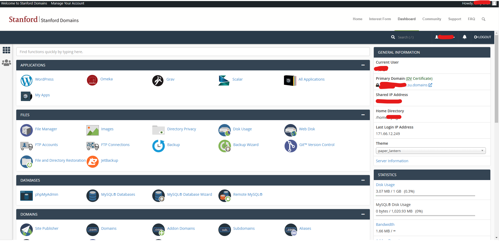
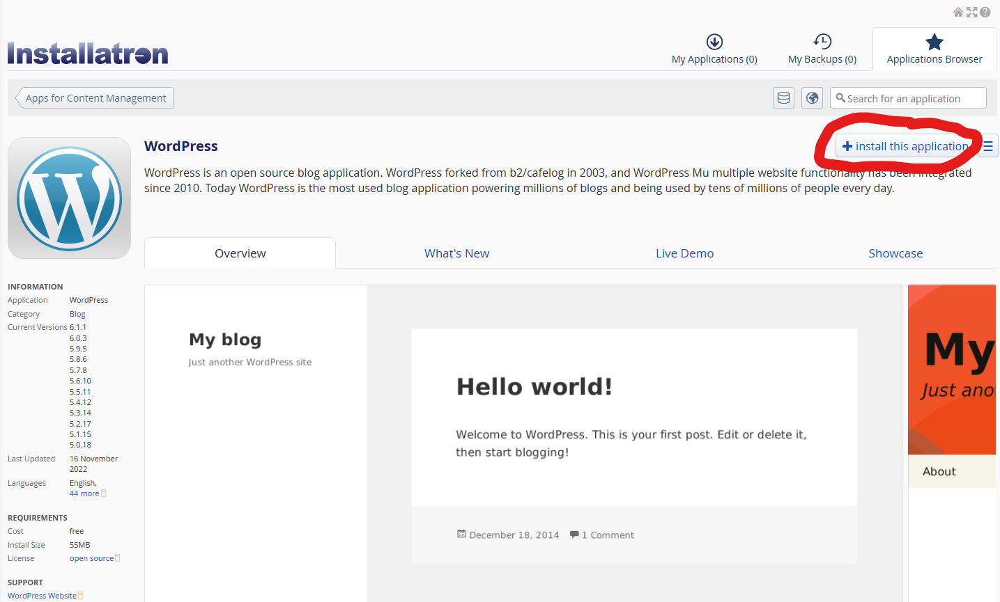
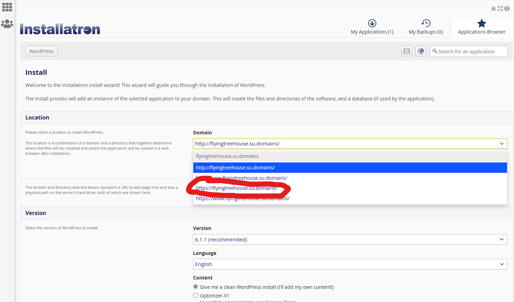
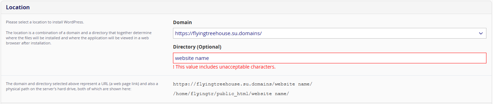
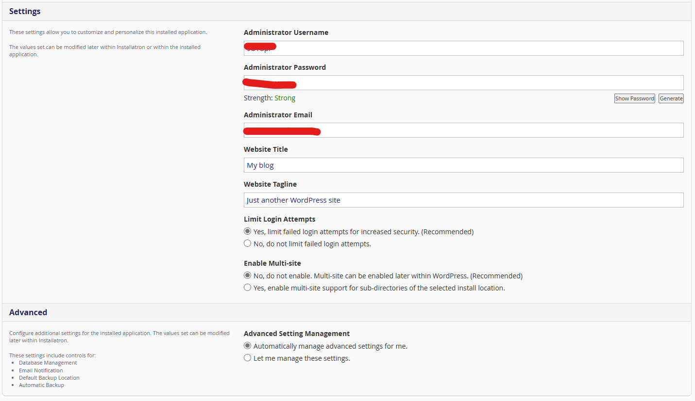

Heading 1
Heading 2
Content
What is Stanford Domains?
Description
Stanford Domains is a web hosting service offered by Stanford University that allows students, faculty, and staff to create and maintain their own personal websites. Users are provided with a domain name and web space to build their site using various tools and platforms such as WordPress, Drupal, and HTML/CSS.
Stanford Domains is available to all students, faculty, and staff at no cost. This makes it an ideal service for many Cardinal Labs clients, as having an official Stanford domain name can lend credibility to the organization associated with it.
Pros and Cons
Pros - Increased visibility: Having a website with a Stanford domain name can increase visibility and awareness of the organization on campus and beyond.
- Customization: There is greater flexibility for student organizations to customize their website and showcase a unique identity or mission, especially compared to many no-code website builders.
- Cost-effective: Stanford Domains is available to students at no cost, making it a cost-effective way for student organizations to establish an online presence.
| Cons - Limited Support: While there are many resources available, they may not be as extensive as commercial web hosting services such as AWS. Depending on the size and needs of your organization, more scalable solutions may be a better choice.
- Technical Knowledge: You will need some level of technical knowledge in web design and development to create and maintain your website. (This is where Cardinal Labs comes in!)
|
Getting Started
Create a Head Domain
- Go to this website and click “Get Started” (the button circled in red).
- Login with your SUNet ID and complete the prompts. When naming your “primary” domain, note that this CANNOT be changed so choose wisely!
- We recommend naming the primary domain your SUNet name, however you can choose whatever name you want. Instructions to change the domain to a proper .stanford.edu address are located later in this document!
- If you wish to change the domain name later, you will have to open a request ticket in a lengthy process that could threaten the security of your website. Instructions to do so are located later in this document.
- Contact the Cardinal Labs Team if you have any questions about setting up your own Stanford domains!
Your website URL will have the following structure: <name of your primary domain>.su.domains/<name of your website> e.g. SamSmith.su.domains/stanford-a-capella After finishing the website and receiving approval from the central office, the domain can become: <name of your website>.stanford.edu stanford-a-capella.stanford.edu |
- After completing the login steps, you should see the following screen which is known as your cPanel. This is the primary location in which you will access and manage your various websites.

Creating a Wordpress Website
Who should use Wordpress?
Pros of using a WordPress website:
- Content Management System: WordPress is a popular content management system that makes it relatively simple for users to create, edit, and publish content without any coding skills (although changing aspects of the website design itself may take more knowledge).
- Scalability: WordPress websites are easily scalable, which means they can better handle large amounts of traffic and can be expanded as the website grows.
- Search engine optimization (SEO): WordPress has built-in SEO tools that help optimize the website for search engines, which can improve the website's visibility and ranking.
- Support: WordPress has a large community of developers and users and is well-established as a website creation tool. This provides you with long-term support with the assistance of Cardinal Labs if your organization wishes to change major features of the website in the future.
Cons of using a WordPress website:
- Complexity: Although WordPress is relatively easy to use, it can be complex for beginners to set up and customize, and may require some technical knowledge to manage effectively.
- Maintenance: WordPress requires regular updates and maintenance to keep it secure and up-to-date, which can potentially cause downtime, be time-consuming, and require technical expertise.
- Security: WordPress is a popular platform and is therefore a common target for hackers, so users must take additional security measures to protect their website from vulnerabilities and threats.
- Cost: While WordPress itself is free, users may need to purchase premium themes and plugins to get the features they need, which can add up over time.
- Performance: WordPress can be resource-intensive and may slow down the website's performance if not optimized properly.
Installing Wordpress
- Click on the “WordPress” Application.
- Press the “install this application” button in the top right corner.

- In the ensuing Installatron page, change the domain to the https:// version as shown below (click on the circled option, your domain name will obviously be different).

- In the optional directory box, to keep things organized, enter the name of your website. This will create a separate folder where all of your website materials will be located. You cannot use spaces, so replace them with underscores (snake_case).

- Leave the other settings unchanged, but in the Settings box, enter a username and password for the Administrator. You can choose whatever you want, but make sure to write this down on paper! Regaining access will require creating a help ticket that can take a long time to be addressed. Click install afterwards.

**Installing the Cardinal Labs Template
Before we dive into the steps for installing a custom template to your WordPress website, it's important to note that although the default version of WordPress' built-in theme and website builder can be used to create a website, it may not look unique or have all the design features you require. Cardinal Labs provides plenty of extra theme options, color palettes, tools, and design knowledge that can help you customize your website to meet your needs and stand out from the crowd!
Now, let's move on to the steps for installing a custom template to WordPress:
Step 1: Choose your template
First, you'll need to choose a custom template that you want to install on your WordPress website. You can purchase templates from third-party websites like ThemeForest, or you can use a free template from the WordPress repository. We highly recommend utilizing the sophisticated theme developed by Cardinal Labs, developed specifically for Stanford VSOs!
Step 2: Download the template
Once you've chosen your template, you'll need to download it to your computer. The template will usually be in a zip file format.
Step 3: Log in to your WordPress dashboard
Next, log in to your WordPress dashboard. You can do this by adding /wp-admin to the end of your website URL.
Step 4: Go to the Appearance section
From the WordPress dashboard, go to the "Appearance" section and click on "Themes."
Step 5: Upload the template
On the Themes page, click the "Add New" button at the top of the page. Next, click the "Upload Theme" button, and then click the "Choose File" button to browse your computer for the template zip file you downloaded in Step 2. Once you've selected the file, click the "Install Now" button.
Step 6: Activate the template
After the template is installed, click the "Activate" button to activate it on your website.
Step 7: Customize the template
Once you've activated the template, you can customize it to meet your specific needs. Depending on the template you chose, you may have access to customization options through the WordPress Customizer or through the template's own customization panel.
That's it! You've now installed and activated a custom template on your WordPress website and can start customizing it to your liking.
Creating a Static Website
What is a static website?
A static website is a website that is made up of HTML, CSS, and JavaScript files that are stored on a web server and served to users as-is. Unlike dynamic websites (like those made from Wordpress), which use databases and server-side programming to generate content on the fly, static websites are pre-built and cannot be modified by users.
Essentially, a static website is like a set of pages that are already printed out and cannot be changed. When a user visits a static website, they see exactly what the website owner has created, without any interactivity or dynamic content.
Overall, static websites are best suited for websites that don't require complex functionality or frequent updates, but need to be fast, reliable, and secure. They are an excellent option for small businesses, individuals, or organizations that need a simple, effective online presence.
Who should use a static website?
Pros of using a static website:
Simplicity: Static websites are simple to set up, manage, and deploy, and do not require any special technical skills or knowledge.
Speed: Static websites load faster than dynamic websites like WordPress, which can improve user experience and search engine ranking.
Security: Static websites are less susceptible to security vulnerabilities and attacks than dynamic websites, as there are fewer components and plugins to exploit.
Cost: Static websites are generally less expensive to host and maintain than dynamic websites like WordPress, as they require fewer resources.
Reliability: Static websites are reliable and consistent, as they do not rely on external databases or plugins that can fail or break.
Cons of using a static website:
Limited functionality: Static websites are limited in terms of functionality and cannot provide dynamic features like e-commerce, user registration, or commenting.
Customization: Static websites are more difficult to customize and update than dynamic websites, as changes must be made to the HTML and CSS code.
Content management: Static websites do not have a built-in content management system like WordPress, which can make it difficult to manage and update content.
Scalability: Static websites may not be as easily scalable as dynamic websites, as they require manual updates to accommodate growth.
Search engine optimization (SEO): Static websites require additional manual optimization to improve their search engine ranking, as they do not have built-in SEO tools like WordPress.
Static hosting via Stanford Domains
To host a static website in cPanel, you can follow these steps:
- Log in to your cPanel account. The details of creating one are covered earlier in this guide.
- Once logged in, navigate to the "File Manager" option. It is usually located in the "Files" section.
- In the File Manager, you'll see a directory structure. Look for the "public_html" directory or a similar folder. This is the root directory for your website.
- Click on the "public_html" directory to open it. If you want to host the website in a subdirectory, create a new folder within the "public_html" directory and enter that folder instead.
- Upload your static website files to the appropriate directory. To do this, click on the "Upload" button in the top toolbar. You can then select the files from your computer and upload them.
- Once the files are uploaded, you can access your website by entering your domain name in a web browser. For example, if your domain is "example.com," enter "http://example.com" in the browser's address bar.
- If you want to use a specific file as your website's default page (e.g., "index.html"), make sure it is named correctly. By default, cPanel looks for an "index.html" file in the directory and displays it as the main page. You can also set custom default page settings in cPanel if needed.
That's it! Your static website should now be hosted and accessible through your domain. Remember to update your DNS settings if necessary to ensure that your domain points to your hosting account.
Hosting via External Service
Although Stanford domains offers free website hosting services, there may be cases where you want to host a static website outside of Stanford domains. Some reasons for doing so may include:
- Flexibility: Hosting a website outside of Stanford domains gives you more flexibility to customize and control your website hosting environment.
- Cost: Hosting a website outside of Stanford domains may be more cost-effective, especially if you need a website with high traffic or complex functionality that requires more resources.
- Features: Hosting a website outside of Stanford domains may give you access to additional features, tools, and resources that are not available on Stanford's platform.
If you do decide to host your static website outside of Stanford domains, there are several options available to you, including:
- GitHub Pages: GitHub Pages is a free hosting service that allows you to host static websites directly from your GitHub repository.
- Amazon S3: Amazon S3 is a cloud storage service that can be used to host static websites. It offers low cost and high scalability, making it a good option for websites with high traffic or storage needs.
- Google Cloud Storage: Google Cloud Storage is another cloud storage service that can be used to host static websites. It offers low cost and high scalability, as well as advanced features like automatic backups and versioning.
- Netlify: Netlify is a platform that offers hosting, build automation, and other tools for static websites. It is easy to use and offers advanced features like continuous deployment and serverless functions.
Overall, while Stanford domains offers free and reliable website hosting services, there may be cases where you want to host your static website outside of the platform. There are several options available, each with its own benefits and features, so it's important to choose the one that best meets your needs and budget.
Technical Support
Website Audit
- Once a year, the Stanford Domains IT department conducts an in-depth audit to phase out unused websites and wordpress materials. So, once a year, make sure to look out for an email asking you to confirm that you’re still using and maintaining your websites!
Troubleshooting cPanel
- Because cPanel manages all the applications used by Stanford Domains, you are forced to accept and install all new upgrades and updates to the platform.
- This means that you are responsible for updating all the plugins used on your Wordpress website - some plugins may not be allowed on older templates. If you run into an issue with a specific feature, contact the Stanford Domains IT Department or Cardinal Labs for technical support.
- Your site must be compatible with PHP 8.1. This can mean that transferring/transitioning an older site to Stanford Domains can cause compatibility issues.
- If you are locked out of your cPanel or forget your administrative password, contact Cardinal Labs or Stanford IT Department for assistance.
Rename Primary Domain
Unfortunately, renaming your primary domain is not supported by default. To rename it, contact university IT and submit a general support ticket at this link. The process will involve deleting all files from your account under the original domain and creating a new domain with your desired name.
Transferring Ownership
- If you graduate or wish to transfer ownership of your cPanel to another person, contact university IT for administrative support. The process for transferring files and wordpress websites is very simple!
Transferring to a .stanford.edu address
If you so desire, you can transfer from a .su.domains address to an official, professional-looking .stanford.edu name!
- The instructions for doing so are at this link.
Once the university approves of your domain name, then a separate folder will appear in your cpanel file manager with the name [*website_name_here*].stanford.edu.
Still have questions?
- Visit this link for more technical information about custom domain hosting!